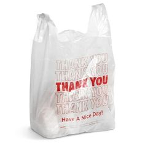

<button onclick="goBack()">Go Back</button>
  <script>
        function goBack() {
            window.history.back();
        }
    </script>

<br>



<br>

<button onclick="window.location.href='https://www.stjohns.edu/news-media/johnnies-blog/top-student-friendly-restaurants-near-st-johns-university-queens-ny';">Food Near Me</button>

